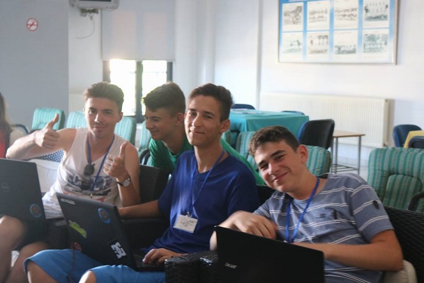
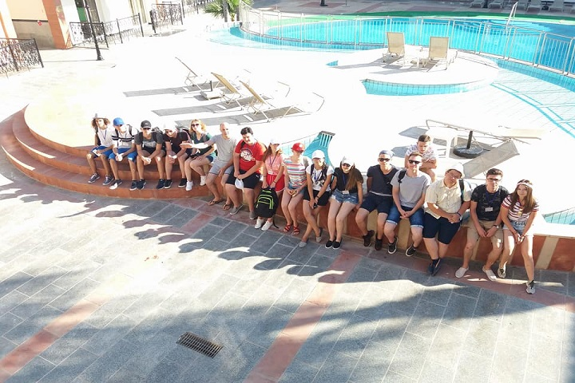
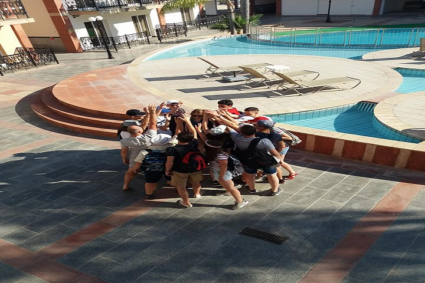

1 / 9

Cipru
2 / 9

Cipru
3 / 9

Cipru
4 / 9

Cipru
5 / 9

Cipru
6 / 9

Cipru
7 / 9

Cipru
8 / 9

Cipru
9 / 9

Cipru
În cadrul activităților de la firma de practică SSM Global Training Services LTD, am reușit să îmi îmbogățesc cunoștințele cu elemente de noutate legate de aplicația Adobe Dreamweaver și dezvoltarea de website-uri.
Este prima experiență de acest tip și sunt complet încantat de cum se desfășoară mobilitatea, este altceva față de școala obișnuită din România unde nu se face practică pe baza a ceea ce învățăm. Cu desăvârșire, prin participarea la activitățile de la firma de practică, dar și la cele din cadrul grupului am reușit să îmi dezvolt capacitatea de a mă exprima, în limba română, cât și în limba engleză, și de a lucra în echipă, cu oameni cunoscuți sau oameni noi. Nu am o activitate favorită din cele desfășurate până acum deoarece toate mi-au plăcut și la toate am participat cu plăcere și m-am implicat.
Antal Cristian-Iulian
Participant flux: Paphos, Cipru
Săptămâna aceasta am învățat mult mai multe lucruri noi legate de Web Design și de folosirea programului Adobe Dreamweaver.
Participarea la activitățile propuse m-a făcut să învăț să comunic și să lucrez în echipă și consider că aceste calități mi s-au îmbunatațit pe perioada mobilitații.
Proiectul prin care noi, în echipe, trebuia să devenim mici antreprenori, mi-a plăcut în mod deosebit datorită solicitării imaginației și spiritului de echipă.
Antal Cristian-Iulian
Participant flux: Paphos, Cipru